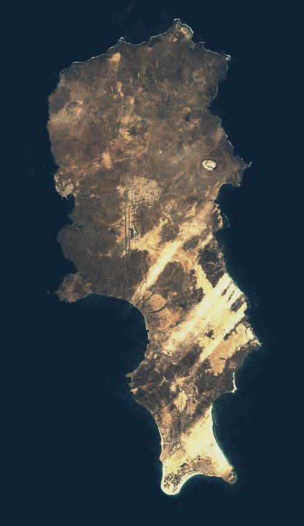
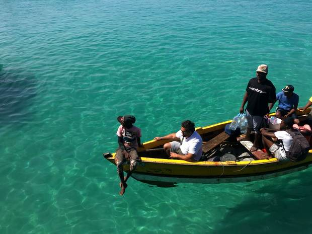
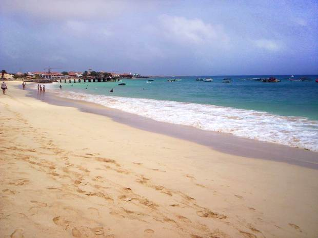
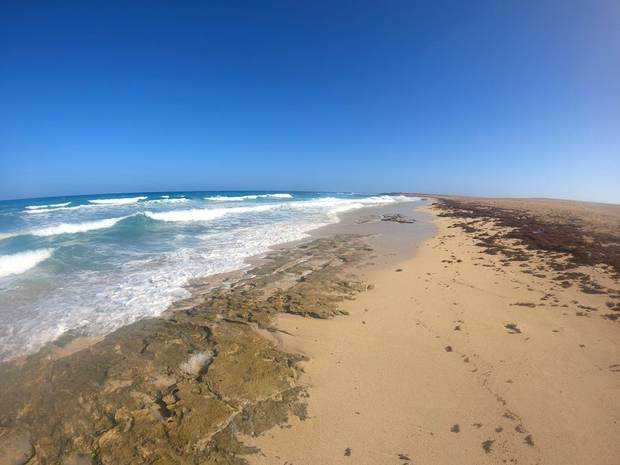
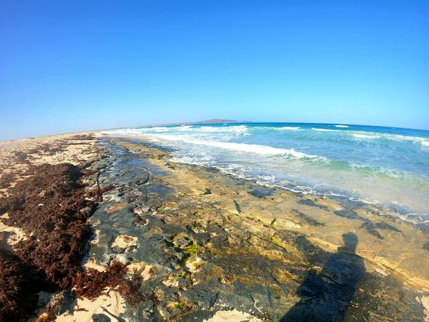
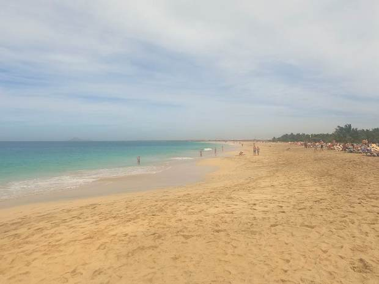
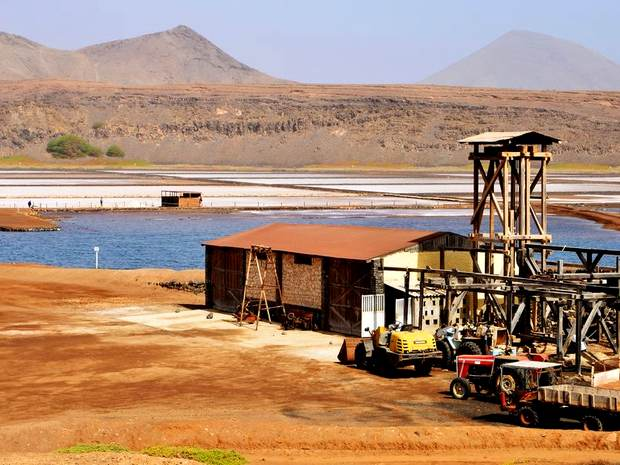

Туристическая аренда
Самый ликвидный рынок страны: главные ворота, 43 направления, круглогодичный поток. Понятная экономика входа и выхода — если задача вложить и сдавать, начинать логично отсюда.
Зелёный Мыс
16°45′ с.ш. 22°55′ з.д.
ТУРИЗМ · КАПИТАЛ · 43 РЕЙСА
Главные ворота страны

Самый ликвидный рынок недвижимости в стране; порт Палмейра — в той же европейской программе
Что это за место
Плоский, сухой, песчаный — географически самый скучный остров архипелага и при этом главный. Через аэропорт Амилкар Кабрал проходит основной поток в страну: 43 направления, прямые рейсы из Европы.
Санта-Мария на южной оконечности — курортная столица: отели, кайт-сёрфинг, дайвинг, самая развитая туристическая инфраструктура. Сюда же идёт основной иностранный капитал в недвижимость, и рынок здесь самый живой и самый дорогой.
Если задача — сдавать в аренду и иметь ликвидный объект, экономика Сала понятнее всех остальных островов. Если задача — жить в зелени, это не сюда.
Высшая точка среди шести
Что есть на острове
Наши инвестиционные проекты
на Сал
Остров живёт на опреснённой воде, и каждая посадка на нём — борьба с солью.
Полей здесь нет, а газоны, аллеи и поля для гольфа есть, и они гибнут по той же причине, что и урожай на других островах. Наш клиент тут не фермер, а отель и управляющая компания: им нужна территория, которая выглядит дорого круглый год, а не выгорает за два сезона.
Ground Improver® — сертифицированный в ЕС (CE) кондиционер почвы на основе m-PAM: связывает соли и выводит их из корневой зоны, не нанося вреда экологии. На реальных полях: −72–94 % засоления за 52–70 дней (Азербайджан, независимая лаборатория, 2023–2024), −90 % натрия за 49 дней (Аргентина, 2024), +132 % сухой массы люцерны (INIA, Чили, 2022). Мы — официальный партнёр Ground Improver® в Кабо-Верде. Программа работает на всех шести островах — меняется только то, чья это земля: на аграрных это поле фермера, на курортных территория отеля.
Что ещё мы здесь рассматриваем
гипотезы, не предложения
Ниже — направления, которые логично вытекают из того, что на острове есть: из его экономики, географии и того, куда идут государственные и европейские деньги. Это не готовые проекты и не сбор инвестиций, а материал для разговора. Считать под конкретную задачу.
Самый ликвидный рынок страны: главные ворота, 43 направления, круглогодичный поток. Понятная экономика входа и выхода — если задача вложить и сдавать, начинать логично отсюда.
В той же европейской программе: модернизация под приём крупных судов и разгрузку рыбы. Снабжение, хранение, холод.
Цель страны — половина электричества из возобновляемых к 2030 году, нужно больше 150 МВт новой солнечной мощности. Плоский пустой остров с инсоляцией 6–8 кВт·ч на м² в сутки.
Остров вблизи
шесть кадров






Sea point, Santa Maria, Sal Island, Cabo Verde © r_dfawn, CC BY-SA 4.0 · Santa Maria Sal Cabo Verde3 © Adrião, CC BY 3.0 · 20240104 151630 beach near Santa Maria, Sal, Cabo Verde © Tbo47, CC0 · 20240104 152238 beach near Santa Maria, Sal, Cabo Verde © Tbo47, CC0 · 20240101 123825 beach near Santa Maria, Sal, Cabo Verde © Tbo47, CC0 · 2014 Cape Verde. Sal. Saltkratern (2) © Daniel Åhs Karlsson, CC BY-SA 3.0